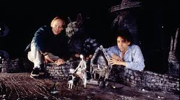
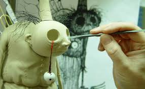
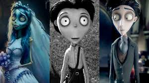
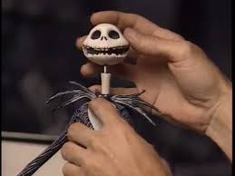

TIM BURTON, EL GENIO DE LO EXTRAÑO

LA ANIMACIÓN DE BURTON: el stop-motion
La estética de Burton alcanza su máxima expresión en las películas de animación, ya que este género le ofrece la posibilidad de dar rienda suelta a sus pensamientos y experimentar con la realidad gracias a la mayor libertad creativa que le permite el medio y a un control absoluto de la puesta en escena.
Su filmografía está compuesta en gran parte por el stop-motion, técnica que el cineasta domina de una manera espectacular. El stop-motion (o animación en volumen) es una técnica de animación que consiste en captar imágenes estáticas que juntas crean ilusión de movimiento. Este proceso da como resultado una serie de fotogramas que puestos sucesivamente crean ilusión de movimiento, convirtiendo los objetos fijos capturados en animados. Los manipuladores o animadores colocan un objeto en la posición deseada en un escenario tridimensional y van desplazando las figuras lentamente. Cada pequeño movimiento, corresponde a un fotograma. Como se basa en una técnica fotográfica muy laboriosa, en la que hay que conseguir que los movimientos entre foto y foto parezcan fluidos y naturales para que sensación de realidad sea creíble, consigue un realismo del que carecen otras.
Cuando aún ni siquiera se le daba un nombre a esta técnica, muchos la utilizaron en sus filmes. Hubo artistas que descubrieron que podían expresarse dotando de vida a cosas inertes y uno de los primeros fue Segundo de Chomón con El hotel eléctrico (1908), en el que los objetos se movían como si tuviesen vida propia.
Con el tiempo, la técnica llegó a los grandes estudios. En 1933 nacía el temible King Kong, que en realidad no era más que una figurita de 45 centímetros. Fue creada por Willis O'Brien, quien posteriormente enseñó el mundo de la animación a su joven ayudante, Ray Harryhausen, del que Burton estaba muy influenciado, por lo que no es de extrañar que quisiera hacer este tipo de animación. Harryhausen se convertiría en uno de los mejores técnicos de animación en stop-motion de la historia, que disparó la popularidad de esta técnica con películas como Los Viajes de Gulliver o Jasón y los Argonautas, entre muchas otras.
Quizás uno de los mayores logros de Burton dentro de la industria haya sido su contribución en la revitalización de esta técnica, que plasmó en su primer corto, Vincent. Era un formato algo desconocido en los 80 y la técnica empleada era inusual, pero su utilización suele ser una condición imprescindible en la realización de sus películas de animación. Cuando hizo el corto Frankenweenie en 1984, Burton ya tenía en mente hacer un largometraje en stop-motion, pero el plan tuvo que retrasarse hasta 2012, año en el que por fin llegó la película Frankenweenie 3D, película de referencia en el cine de animación. Le siguen películas conocidas por todos como Pesadilla antes de Navidad, convertida ya en una película de culto, o La Novia Cadáver.
Es un trabajo muy laborioso que puede verse reflejado en Pesadilla antes de Navidad, donde fueron necesarias más de 400 cabezas que se sustituían fotograma a fotograma para representar las distintas expresiones de Jack, el protagonista. Hoy día existen avances que incorporan en el interior de la cabeza de los personajes un sistema de engranajes que permiten movimientos faciales de las figuras, haciendo el trabajo más ágil. Una vez hechos, las manos de los animadores son las que dotan de movimiento a los personajes, que parecen desplazarse con una extraña mezcla de pesadez y ligereza.
En cuanto a los decorados, pasan de ser ideas plasmadas en papel a tener tres dimensiones, primero como maqueta y después con dimensiones definitivas. Sobre la maqueta es donde se realizan todo tipo de pruebas, desde la iluminación hasta los movimientos tanto de cámara como de los personajes.